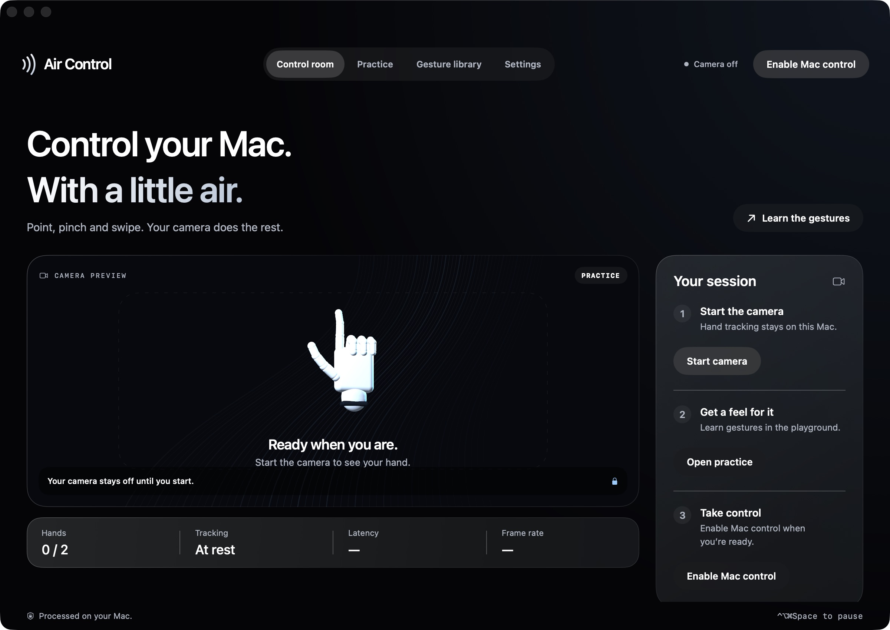
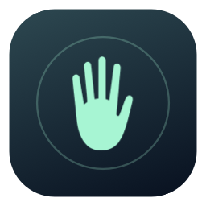

Move pointer
Index up, middle folded. Relax your other fingers and move your hand.
A little air. A whole new way.
Point. Pinch. Swipe.
Move through your Mac without touching a thing.
v0.6.0 · Apple silicon · macOS 13 or later

Meet Air Control
Your camera becomes a new way in. Air Control tracks your hands and turns familiar movements into mouse and keyboard actions.
Move the pointer with a finger. Pinch to click. Sweep your hand to the next desktop. It’s a small change in how you move. And a fresh way to use your Mac.
Make your move
A closer look
Four simple places to start, learn, explore and make it yours.
Start your camera, check tracking and take control when you’re ready. Live Mac control always starts with you.
The floating camera feed stays across apps and desktops, with a 3D gesture guide and action feedback. Move it or hide it anytime.
Follow animated 3D lessons in a playground. Try each action on a chosen Mac app with a countdown when you’re ready.
The gesture collection
Explore all 22 gestures. Every one has an animated lesson in the app.
Index up, middle folded. Relax your other fingers and move your hand.
Touch thumb to index. Release within about two-thirds of a second.
Make two quick thumb–index pinches in the same place.
Hold an index pinch for two-thirds of a second. Move, then release.
Point, then touch your thumb to your middle fingertip.
Raise index and middle fingers. Move them up or down.
Raise two fingers and swipe right. Needs browser history.
Raise two fingers and swipe left. Needs browser history.
Bring up an open hand and sweep right to the previous desktop.
Bring up an open hand and sweep left to the next desktop.
Bring up an open hand and sweep up to see your windows.
Bring up an open hand and sweep down to see the app’s windows.
Thumb tucked, three fingers up. Swipe left.
Thumb tucked, three fingers up. Swipe right.
Thumb tucked, three fingers up. Swipe up. Uses F11.
Thumb tucked, three fingers up. Swipe down to open Apps or Launchpad.
Thumb tucked, hold three fingers still for a second. Support varies by app.
Point and touch thumb to ring fingertip. Sends Command–0 in supported apps.
Pinch on both hands. Spread or bring them together. Supported browsers and Preview.
Pinch on both hands and turn like a dial. Rotates in 90° steps in Preview.
Raise two fingers at the right edge, then swipe left. Uses Fn–N.
Close your fist and hold for a second. Resume from the app or menu bar.
Desktop gestures use your Mac’s default keyboard shortcuts and need more than one Space. Zoom works in supported browsers and Preview. Rotation uses 90° steps in Preview. See compatibility details
Personal by design
Hand tracking runs locally with Apple Vision. Air Control doesn’t upload or record your camera feed. No account. No cloud processing. Your camera stays off until you start it.
From download to first gesture
Have an Apple silicon Mac, macOS 13 or later, and a working camera? You’re ready to begin.
Download the DMG, open it, and drag the Air Control.app icon inside it into Applications (not the DMG file). Eject the disk image, then launch Air Control from Applications.
This beta is ad-hoc signed, without Apple notarization. If “Air Control” Not Opened appears, choose Done. Go to System Settings → Privacy & Security, scroll down to Security and click Open Anyway beside Air Control. Confirm Open Anyway again in the next dialog (or Open on other macOS versions), if you trust this download. Authenticate if asked. See the tested screenshot walkthrough ↗ Read Apple’s guidance ↗
Click Start camera and allow Camera access. In the app’s Settings, choose your built-in, USB or available Continuity Camera. Keep your full hand in frame with light in front of you.
Explore Practice first. To control macOS, click Enable Mac control and allow Air Control in Privacy & Security → Accessibility. Return to the app and enable control again.
For desktop switching, create at least two desktops in Mission Control. In Keyboard → Keyboard Shortcuts → Mission Control, enable the default Control–Arrow shortcuts and F11 for Show Desktop. Air Control uses these shortcuts; it doesn’t change them.
Good to know
The current beta is built only for Apple silicon Macs (M1 and later) running macOS 13 or later, with a working camera. Native Liquid Glass is used on macOS 26 and later; earlier supported systems use frosted materials. Intel builds are planned after testing.
Pointing, clicking, dragging and scrolling send standard mouse events. Navigation uses familiar keyboard shortcuts, so the target app and your shortcut settings determine support. Zoom uses Command +/− and reset uses Command–0 in Safari, Chrome, Edge, Firefox and Preview. Rotation is limited to 90° steps in Preview. Air Control doesn’t add touchscreen hardware, pressure sensing or arbitrary app-specific touch gestures.
This beta download is free. It has a local ad-hoc signature, without a paid Developer ID certificate or Apple notarization, so macOS may ask for an explicit Open Anyway approval. Follow the installation steps above and Apple’s linked guidance only if you trust the source. Managed Macs may prevent an exception.
Hold a closed fist for one second, use Pause in the menu bar, or press Control + Option + Command + Space. Use the floating panel’s × to hide the feed; hand tracking continues. Show it again from Settings or the menu bar. Live control does not resume automatically after relaunch.
Make sure your whole hand is visible and well lit, then use Practice to check recognition. Gesture library → Try on Mac tests the action separately from camera tracking. Check Accessibility access, enabled gestures and system shortcuts. Browser back/forward needs history, and desktop switching needs another Space. Report an issue on GitHub ↗

Ready when you are
Free beta v0.6.0 · Apple silicon · macOS 13+
Release notes & SHA-256 checksum ↗A star helps more people discover Air Control.